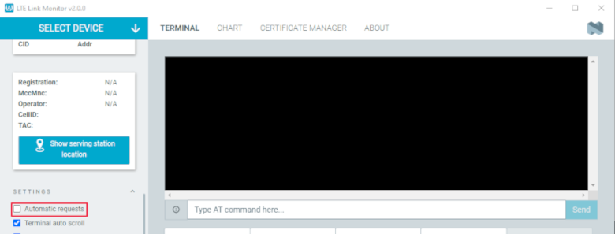

The nRF9160 DK is a hardware development platform used to design and develop application firmware on the nRF9160 LTE Cat-M1 and Cat-NB1 System in Package (SiP).
See the nRF9160 DK Hardware guide for detailed information about the nRF9160 DK hardware.
To get started with the nRF9160 DK, follow the steps in the Getting started with nRF9160 DK section.
If you are not familiar with the nRF Connect SDK and the development environment, see the introductory documentation.
The nRF9160 DK contains an nRF52840 SoC that is used to route some of the nRF9160 SiP pins to different components on the DK, such as LEDs and buttons, and to specific pins of the nRF52840 SoC itself.
For a complete list of all the routing options available, see the nRF9160 DK board control section in the nRF9160 DK User Guide.
The nRF52840 SoC on the DK comes preprogrammed with a firmware.
If you need to restore the original firmware at some point, download the nRF9160 DK board controller firmware from the nRF9160 DK downloads page.
To program the HEX file, use nrfjprog (which is part of the nRF Command Line Tools).
If you want to route some pins differently from what is done in the preprogrammed firmware, program the zephyr:hello_world sample instead of the preprogrammed firmware.
Build the sample (located under ncs/zephyr/samples/hello_world) for the nrf9160dk_nrf52840 board.
To change the routing options, enable or disable the corresponding devicetree nodes for that board as needed.
See zephyr:nrf9160dk_board_controller_firmware for detailed information.
When you wish to use nRF Cloud’s REST Application Programming Interface (API), the DK requires a valid security certificate.
This means that you need to update the certificate stored on the DK.
To do so, you need to download a new certificate and then provision it to your DK.
Ownership code: the ownership code is the PIN or the hardware ID of your DK, and it is found on the label of your nRF9160 DK.
If the label contains a PIN in addition to the IMEI number, enter this pin.
If it does not contain a PIN, enter the Hardware ID (HWID) HEX code, with or without colons.
For example, AA:BB:CC:DD:EE:FF or AABBCCDDEEFF.
Note
The ownership code serves as a password and proves that you own the specific nRF9160 DK.
Therefore, do not share it with anyone.
Click Download Certificate and save the .cert.json file to a folder of your choice.
Note
The certificate contains all the information that is needed to connect your nRF9160 DK to nRF Cloud.
Therefore, do not share it with anyone.
After downloading the certificate, you must provision it to your nRF9160 DK.
Note
The application firmware on the nRF9160 DK must support long AT commands up to 3 kB to provision the certificate.
If you have updated the application firmware, this requirement is fulfilled.
Complete the following steps to provision the certificate:
Open the LTE Link Monitor app from nRF Connect for Desktop.
In the SETTINGS section of the side panel, deselect the checkbox for Automatic requests if it is selected.

If you have already inserted the SIM card into your DK, remove it before you continue.
Connect the DK to the computer with a micro-USB cable, and turn it on.
Click Select device and select the DK from the drop-down list.
You can identify the nRF9160 DK by the fact that it has three COM ports.
The log message “Certificate update completed” indicates that the certificate was provisioned successfully.
If you encounter any errors, switch to the terminal view and check the output of the AT commands that were sent to the nRF9160 DK modem.
Note
If you have connected your nRF9160 DK to nRF Cloud before, you must delete the device there after provisioning the certificate.
Open the entry for your device from the Devices view, then click the gear icon to the right of the device’s name, and select Delete Device.
Then, add the nRF9160 DK again as described in Connecting the nRF9160 DK to nRF Cloud
Make sure to select a suitable build target when building your application.
In Zephyr, the firmware for the application core of zephyr:nrf9160dk_nrf9160 is divided into two different build targets:
nrf9160dk_nrf9160 for build targets that have Cortex-M Security Extensions (CMSE) disabled.
nrf9160dk_nrf9160_ns for build targets that have CMSE enabled and have the Secure Processing Environment (SPE) firmware alongside the Non-Secure Processing Environment (NSPE) firmware.
For information about CMSE and the difference between the two environments, see Processing environments.
The nRF Connect for VS Code extension is a complete IDE for developing applications compatible with the nRF Connect SDK.
This includes an interface to the compiler and linker, an RTOS-aware debugger, a seamless interface to the nRF Connect SDK, and a serial terminal.
For installation instructions, see Installing using Visual Studio Code.
For other instructions related to nRF Connect for VS Code extension, see the nRF Connect for Visual Studio Code documentation site.
Complete the following steps after installing the nRF Connect for VS Code extension:
Open Visual Studio Code.
If you installed the nRF Connect SDK using the Installing automatically, you can click the Open VS Code button next to the version you installed.
Complete the steps listed on the How to build an application page in the nRF Connect for VS Code extension documentation.
Program the application:
Set the SW10 switch (marked PROG/DEBUG) in the nRF91 position to program the nRF9160 application.
In nRF9160 DK v0.9.0 and earlier, the switch is called SW5.
Connect the nRF9160 DK to your PC using a USB cable.
Power on the nRF9160 DK.
In nRF Connect for VS Code extension, click the Flash option in the Actions View.
If you have multiple boards connected, you are prompted to pick a device at the top of the screen.
A small notification banner appears in the bottom-right corner of Visual Studio Code to display the progress and confirm when the flashing is complete.
Complete the command-line build setup before you start building nRF Connect SDK projects on the command line.
To build and program the source code from the command line, complete the following steps:
Open a terminal window.
Go to the specific sample or application directory.
For example, the folder path is ncs/nrf/applications/asset_tracker_v2 when building the source code for the nRF9160: Asset Tracker v2 application on the nRF9160 DK.
To get the rest of the dependencies, run the westupdate command as follows:
west update
To build the sample or application code, run the westbuild command as follows:
west build -b build_target
The parameter build_target must be nrf9160dk_nrf9160_ns when building the application code for the nRF9160 DK.
Note
The parameter destination_directory_name can be used to optionally specify the destination directory in the west command.
Unless a destination_directory_name is specified, the build files are automatically generated in build/zephyr/.
Program the application:
Set the SW10 switch (marked PROG/DEBUG) in the nRF91 position to program the nRF9160 application.
In nRF9160 DK v0.9.0 and earlier, the switch is called SW5.
Connect the nRF9160 DK to your PC using a USB cable.
Power on the nRF9160 DK.
Program the sample or application to the device using the following command:
west flash
Note
When programming with the nRF9160: Asset Tracker v2 application, use the westflash--erase command.
The application has secure boot enabled by default that includes data in the One-Time Programmable region (OTP).
This means that everything must be erased before flashing.
The device resets and runs the programmed sample or application.
nRF9160 DK v0.14.0 and later has additional hardware features that are not available on earlier versions of the DK:
External flash memory
I/O expander
To make use of these features, specify the board revision when building your application.
Note
You must specify the board revision only if you use features that are not available in all board revisions.
If you do not specify a board revision, the firmware is built for the default revision (v0.7.0).
Newer revisions are compatible with the default revision.
To specify the board revision, append it to the build target when building.
For example, when building a non-secure application for nRF9160 DK v1.0.0, use nrf9160dk_nrf9106_ns@1.0.0 as build target.
See zephyr:application_board_version and zephyr:nrf9160dk_additional_hardware for more information.